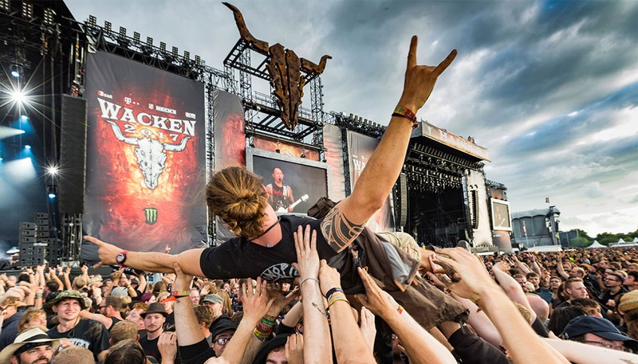
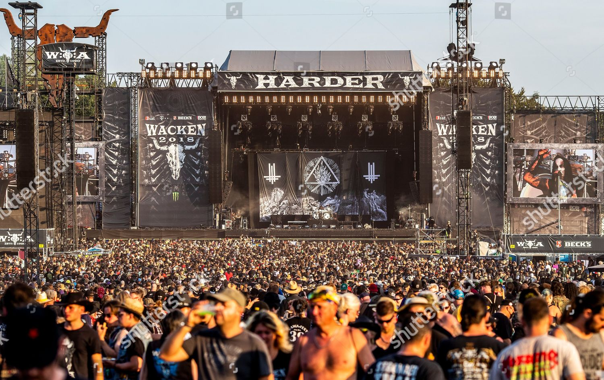
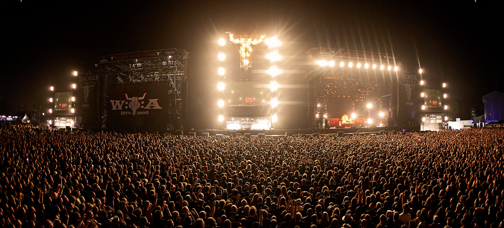
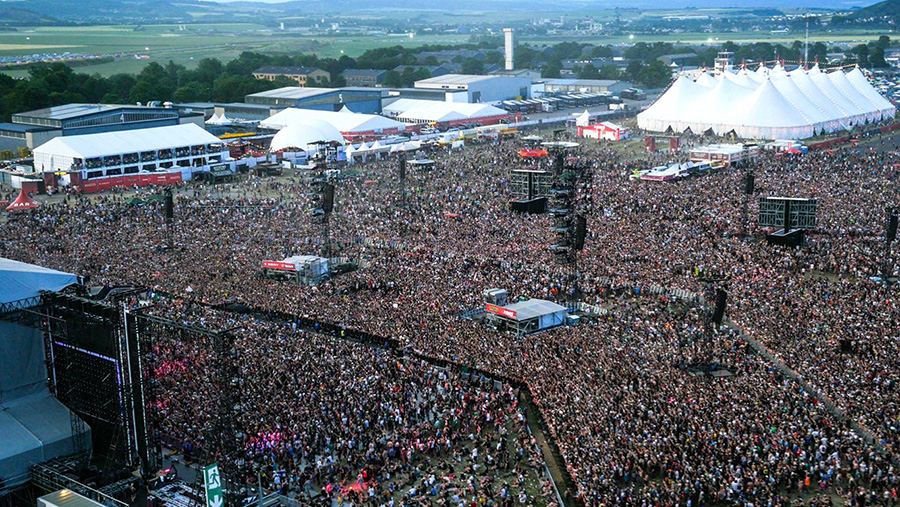
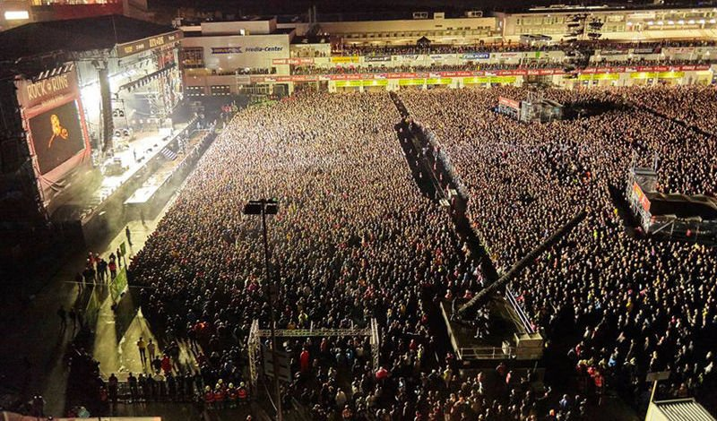
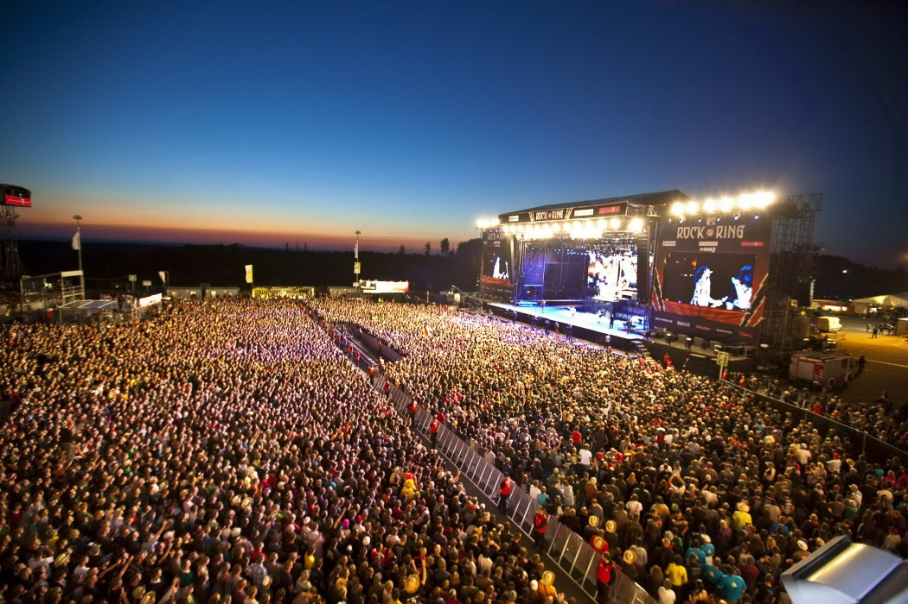

air metal music festifal
Wacken Open Air (W:O:A) — крупнейший в мире фестиваль тяжёлой музыки, проводимый ежегодно в предместьях городка Вакен, на севере Германии. WOA, или чаще просто «Wacken», является крупнейшим и неофициально считается главным метал-событием в мире. В 2006 году количество посетителей этого мероприятия превысило 60 тысяч. В настоящее время Вакен принимает более 85 тысяч посетителей ежегодно.
Впервые фестиваль был проведён в 1990 году при участии местных малоизвестных групп, но с каждым годом популярность росла, и к 1998 году Wacken стал фестивалем европейского, а затем и мирового уровня.
Современный «Wacken Open Air» проводится в первые выходные августа каждого года и официально длится три дня (по факту — четыре). Устанавливается семь (иногда восемь) сцен, на которых выступают свыше 80 музыкальных коллективов со всего мира.



Rock am Ring
Rock am Ring — один из крупнейших рок-фестивалей, ежегодно проходящий в Германии в первый выходной июня.
Существует традиция выкрикивания имени Helga на Rock am Ring. Как гласит история, несколько лет назад один незадачливый посетитель, потерявший в толпе свою подружку по имени Хельга, всю ночь бегал по окрестностям и выкрикивал её имя, разбудив при этом не одну сотню человек. С тех пор на Rock am Ring закрепилась традиция громко громко кричать имя "Хельга".


